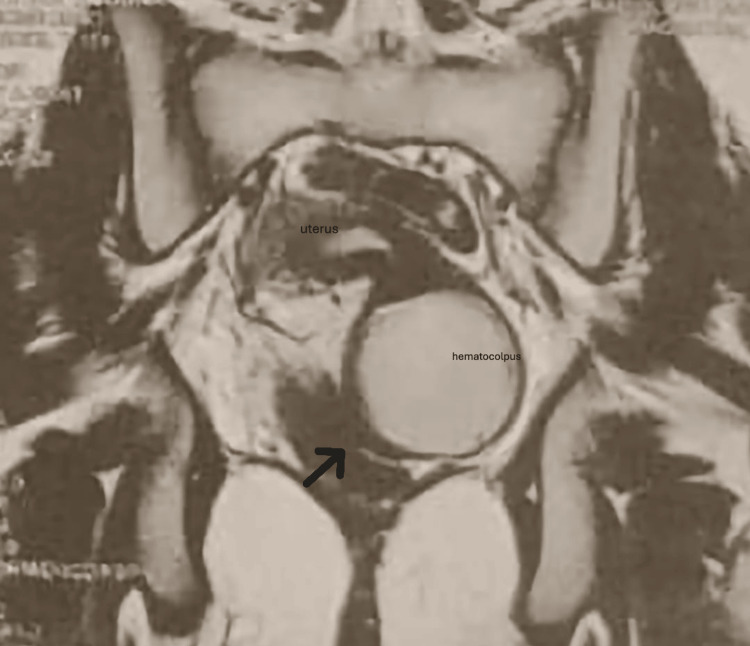
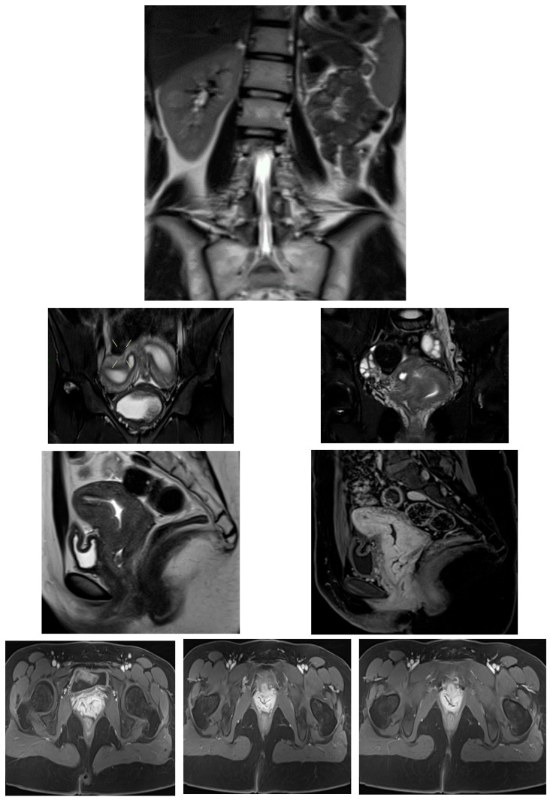

1671 — Ứ máu âm đạo – tử cung ở trẻ vị thành niên: màng trinh kín, vách ngang, OHVIRA & bất sản cổ tử cung / Hematocolpos and hematometra in adolescents
Tags: pattern:u-mau-am-dao pattern:u-mau-buong-tu-cung pattern:khong-hoi-am vung:am-dao vung:tu-cung vung:tieu-khung score:ESHRE-ESGE protocol:TVUS protocol:MRI-tieu-khung incidentaloma:hematocolpos
Mức chắc chắn (certainty): tổng hợp y văn (literature synthesis) — số liệu dịch tễ lấy từ loạt 17 bệnh nhi hydrometrocolpos (PMC13614824) và 164 ca OHVIRA (PMC12589279); hình ảnh là ca nguyên văn có số đo (617 mL — PMC12665289; 700 mL — PMC13165485; didelphys + thận mất — PMC12939194); kết cục tái hẹp sau mổ từ một ca (PMC12928252). Không có RCT nào cho nhóm bệnh này.
1. Tổng quan bệnh học – cơ chế hình ảnh
- Phôi thai học quyết định tên gọi: ống Müller (paramesonephric) dài ra → dung hợp → tạo lòng (canalization) → tiêu vách giữa. Hỏng ở bước nào thì tắc ở tầng đó, và tầng tắc quyết định khoang nào bị ứ máu:
- tắc ở lỗ âm đạo (màng trinh kín) → ứ toàn bộ âm đạo (hematocolpos), tử cung ít bị ảnh hưởng lúc đầu;
- tắc ở âm đạo giữa/trên (vách ngang, teo âm đạo) → ứ âm đạo trên ± buồng tử cung;
- tắc một nửa âm đạo (OHVIRA, sừng tử cung mù) → ứ một bên âm đạo ± sừng tử cung bên đó, bên kia vẫn hành kinh;
- tắc ở cổ tử cung (bất sản/thiểu sản cổ tử cung) → ứ máu buồng tử cung, âm đạo bình thường hoặc thiếu.
- Vì sao ứ máu chứ không chỉ ứ dịch: sau dậy thì, nội mạc tử cung bong theo chu kỳ nhưng không có đường ra → máu tích trong lòng ống, áp lực tăng dần → đau bụng dưới theo chu kỳ, khối vùng chậu, chèn ép bàng quang/trực tràng. Máu ứ lâu → viêm nhiễm (pyocolpos) và trào ngược qua vòi → lạc nội mạc tử cung.
- TẠI SAO hình ảnh phân biệt được "máu" với "dịch/nang":
- T1 sáng: hemoglobin thoái hóa thành methemoglobin (Fe³⁺ thuận từ) → rút ngắn T1; mỡ cũng sáng T1 nên phải có T1 fat-sat để loại mỡ (u quái, mỡ trong khối).
- T2 thay đổi theo tuổi máu: máu cấp (deoxyhemoglobin trong hồng cầu còn nguyên) → T2 tối; bán cấp muộn (methemoglobin ngoại bào) → T2 sáng; mạn (hemosiderin) → T2 tối viền. Vì vậy "T2 sáng" không loại trừ máu ứ — ca 16 tuổi dưới đây có hematocolpos T2 sáng.
- Mức dịch–dịch (fluid–fluid level): huyết thanh nhẹ nổi trên, hồng cầu lắng dưới — dấu hiệu rất gợi ý máu đang tích thêm, gặp ở ứ máu thể hoạt động.
- Không ngấm thuốc: phần dịch/máu không ngấm (chỉ thành ngấm) → khác u hoại tử/khối đặc. DWI: máu thường không hạn chế khuếch tán thật (ADC không thấp, có thể T2 shine-through); ứ mủ thì ADC thấp — dùng khi có sốt để phân biệt pyocolpos.
- CT (hạn chế ở trẻ vì liều): máu ứ đọng ~30–60 HU, cao hơn nước tiểu 0–10 HU; nhưng CT dễ gọi nhầm khối nang buồng trứng — không phải phương thức đầu tay.
- Con số phải nhớ:
- Hydrometrocolpos 1:16.000 trẻ gái sinh sống; màng trinh kín 0,05–0,1% trẻ gái — nguyên nhân tắc hay gặp nhất (PMC13614824).
- Trong 17 bệnh nhi hydrometrocolpos, cả 17 đều có ứ nước thận–niệu quản do chèn ép đường niệu dưới; 1 ca phát hiện trước sinh với ứ nước–niệu quản hai bên + thiểu ối (PMC13614824) → ứ máu âm đạo là bệnh của cả đường niệu, không chỉ của âm đạo.
- OHVIRA = 6,2–8,3% các dị dạng sinh dục nữ (PMC12589279); dị dạng tử cung 5,5% dân số chung, 8,0% ở người hiếm muộn, 13,3% ở người sảy thai tái diễn (PMC13394822); dị dạng cổ tử cung–âm đạo 4–7% các dị dạng Müller (PMC12283993).
- Chẩn đoán nhầm OHVIRA 16,5% (27/164): hay gọi là áp-xe vùng chậu 29,6% và nang buồng trứng 25,9%; MRI trước chẩn đoán làm giảm chẩn nhầm (OR 0,157); có lạc nội mạc đi kèm làm tăng nguy cơ chẩn nhầm (OR 3,267) (PMC12589279).
- Lạc nội mạc tử cung gặp 42,86% ở nhóm dị dạng TẮC NGHẼN so với 16,49% ở nhóm không tắc (p = 0,006), và xuất hiện sớm hơn ~3 tuổi (25,22 ± 4,02 vs 28,46 ± 4,49) (PMC13012282) → mỗi tháng chẩn đoán muộn là mỗi tháng trào ngược.
2. Mẫu hình + chẩn đoán phân biệt theo vị trí (gamut)
- Mẫu hình chung: trẻ gái vô kinh nguyên phát ± đau bụng dưới chu kỳ ± khối vùng chậu, siêu âm thấy hốc không hồi âm hình con nhộng ở đường giữa, phía sau bàng quang.
- Gamut theo TẦNG tắc — nhớ "M – V – N – C" (Màng – Vách – Nửa – Cổ):
- Màng (lỗ âm đạo): màng trinh kín (hay gặp nhất; màng mỏng, phồng xanh tím ở âm hộ khi rặn), dính môi bé, sẹo cắt âm vật/khâu hẹp sau FGM.
- Vách (âm đạo): vách ngang âm đạo (thường 1/3 trên, dày ≥ 1 cm), teo âm đạo đoạn xa, hẹp âm đạo sau xạ/mổ.
- Nửa (một bên): OHVIRA/Herlyn–Werner–Wunderlich (tử cung hai sừng–hai cổ + một nửa âm đạo tắc + thận cùng bên mất), Robert's uterus (vách dọc không hoàn toàn + một buồng mù), tử cung một sừng có sừng mù, ACUM (khối có khoang trong cơ tử cung — bắt chước).
- Cổ (cổ tử cung): bất sản/thiểu sản cổ tử cung ± bất sản âm đạo → ứ máu buồng tử cung, âm đạo có thể bình thường.
- Không tắc (phân biệt quan trọng): MRKH — vô kinh nguyên phát nhưng KHÔNG đau chu kỳ, KHÔNG ứ máu, không có tử cung thật.
- Gamut "khối nang vùng chậu ở trẻ gái" (khi chưa thấy ứ máu): nang buồng trứng/paraovarian · ứ nước vòi tử cung · bàng quang căng (bí tiểu) · nang niệu rốn · u quái cùng cụt · thoát vị màng não trước cùng cụt · nang ống Müller.
- Gamut "đau bụng dưới cấp + sốt ở trẻ đã dậy thì": pyocolpos/ứ mủ · áp-xe phần phụ · viêm ruột thừa · xoắn phần phụ · vỡ nang — ứ mủ có thể vỡ thành viêm phúc mạc, đây là lý do không được chọc dò mù.
3. Bảng so sánh phân biệt (ma trận đối chiếu)
| Thực thể (entity) | Hình ảnh điển hình (US/MRI) | Chốt vào (rule-in) | Chốt loại (rule-out) | Gợi ý xác nhận |
|---|---|---|---|---|
| Màng trinh kín (imperforate hymen) | Khối dịch con nhộng đường giữa, sau bàng quang; màng mỏng phồng ở âm hộ; tử cung bình thường, hai buồng trứng bình thường | Vô kinh + đau chu kỳ + màng phồng xanh tím ở lỗ âm đạo; MRI: ứ máu dưới tầng màng, không có vách ngang | Thấy vách dày ≥ 1 cm hoặc cổ tử cung bất thường → không phải màng trinh | Khám âm hộ; US đo 3 đường kính + thể tích; MRI khi cần loại tầng trên |
| Vách ngang âm đạo | Ứ máu âm đạo trên; vách dày 1–2 cm trên T2, thường 1/3 trên | Khoảng cách vách–lỗ âm đạo đo được trên MRI; vách dày, có mô xơ | Vách mỏng như màng + sát lỗ âm đạo → màng trinh kín | MRI T2 sagittal đo độ dày/chiều cao vách; chuẩn bị cắt vách + nối niêm mạc |
| Teo âm đạo đoạn xa | Ứ máu âm đạo trên + đoạn âm đạo dưới xơ hẹp; có thể kèm bất sản cổ tử cung | Đoạn âm đạo dưới không có lòng, ứ máu phía trên; ca 16 tuổi: vách mỏng + thành phần teo đoạn xa (PMC12928252) | Có lòng âm đạo liên tục → loại teo | MRI + khám; nguy cơ tái hẹp sau nối — ca này tái tắc 2 tháng, nhiễm trùng 4 tháng, phải đặt mold |
| OHVIRA (Herlyn–Werner–Wunderlich) | Tử cung hai sừng, hai cổ tử cung + một nửa âm đạo căng máu chèn bàng quang/trực tràng; thận cùng bên không có | Bộ ba: didelphys + hemivagina tắc + bất sản thận cùng bên trên MRI; 16,5% từng bị chẩn nhầm (PMC12589279) | Có hai thận bình thường + không có nửa âm đạo tắc → không phải OHVIRA | MRI là bắt buộc (US bỏ sót thận mất, không phân loại được); cắt vách + marsupialization |
| Robert's uterus / sừng mù | Vách dọc không hoàn toàn + buồng mù ứ máu trong cơ tử cung; bờ ngoài tử cung bình thường | Đau chu kỳ nặng + một khoang mù có nội mạc, không thông với cổ tử cung | Không thấy khoang mù, hai buồng thông nhau → loại | MRI T2 + soi buồng; dễ bị gọi là JCA và mổ sai (PMC12085458) |
| Bất sản cổ tử cung | Ứ máu buồng tử cung, không thấy cổ tử cung, âm đạo có thể bình thường/thiếu | Không có ống cổ tử cung trên MRI; ứ máu trong tử cung, không có ứ máu âm đạo | Thấy cổ tử cung và ống thông → loại | MRI; nối tử cung–âm đạo (6/8 thành công) hay cắt tử cung (PMC13394822) |
| MRKH | Không có tử cung thật, buồng trứng bình thường, không ứ máu | Vô kinh nguyên phát + KHÔNG đau chu kỳ + không khối máu | Có ứ máu/đau chu kỳ → không phải MRKH đơn thuần | MRI; tư vấn tạo âm đạo — không mổ cấp cứu |
| Nang buồng trứng / áp-xe phần phụ (bắt chước) | Nang lệch một bên, có vách/mức cặn, tuyến sinh dục bình thường; US không thấy khối đường giữa sau bàng quang | Khối lệch bên + buồng trứng cùng bên không tách được | Khối đường giữa, hình con nhộng, nối với tử cung → ứ máu | MRI; không chọc dò mù khi chưa loại ứ máu |
| Pyocolpos (ứ mủ) | Ứ máu + vách dày, tăng tín hiệu T2 quanh, hạn chế khuếch tán (ADC thấp), khí hiếm | Sốt + đau + ứ máu + DWI hạn chế | Không sốt, không hạn chế khuếch tán → ứ máu đơn thuần | Dẫn lưu + kháng sinh, không chỉ theo dõi |
4. Protocol chụp + hệ phân độ/điểm chuẩn hóa
- Siêu âm là bước 1 (không xâm nhập, không bức xạ): ở trẻ chưa quan hệ, transabdominal với bàng quang đầy; nếu bàng quang không giữ được → transperineal. Đo 3 đường kính và tính thể tích V = 0,523 × D1 × D2 × D3 (ca dưới: 11,95 × 9,90 × 9,96 cm → 616,91 mL).
- Bắt buộc tìm THẬN trên siêu âm: mất một thận cùng bên là chìa khóa của OHVIRA — nhưng US bỏ sót vì ruột/bàng quang che; không thấy thận = chỉ định MRI.
- MRI tiểu khung (chuẩn vàng) — không cần cản từ thường quy:
- T2 sagittal + coronal + axial 3–4 mm (giải phẫu tử cung/âm đạo/vách);
- T1 axial ± T1 fat-sat (xác nhận máu: T1 sáng, mất tín hiệu khi fat-sat = mỡ);
- DWI b800–1000 + ADC khi sốt hoặc nghi pyocolpos;
- gadolinium: chỉ khi nghi khối đặc/u — không dùng để "thấy máu".
- Phân loại:
- ESHRE–ESGE 2013: U0–U6 (hình thái tử cung), C0–C4 (cổ tử cung), V0–V4 (âm đạo) — ghi đủ 3 thành phần, vì cùng "ứ máu" nhưng C/V khác nhau quyết định mổ gì.
- OHVIRA — Zhu: class 1 tắc hoàn toàn (đau dữ dội sớm sau dậy thì) · class 2 tắc không hoàn toàn (vẫn có kinh, chẩn đoán muộn).
- Ngưỡng/thời điểm can thiệp: mổ ngay khi có tắc nghẽn gây đau; thể không tắc (MRKH, vách không cản trở) xử trí gần thời điểm hoạt động tình dục — nguyên tắc "theo giải phẫu, ưu tiên giải áp + bảo tồn sinh sản" (PMC13394822).
- Sau mổ: khám + siêu âm lại 2 tuần, 6–8 tuần, 3 tháng (ca teo âm đạo tái tắc 2 tháng, nhiễm trùng 4 tháng — PMC12928252); đặt mold/nong khi nguy cơ hẹp.
flowchart TD
A[Trẻ gái vô kinh nguyên phát + đau bụng chu kỳ] --> B[Siêu âm bụng–tiểu khung bàng quang đầy]
B --> C{Có khối dịch đường giữa sau bàng quang?}
C -->|Không| D[Loại ứ máu: xét MRKH, rối loạn nội tiết, nang buồng trứng]
C -->|Có| E[Đo 3 đường kính + tìm hai thận]
E --> F{Mất một thận hoặc nghi tầng trên?}
F -->|Có| G[MRI tiểu khung T2 + T1 ± DWI]
F -->|Không| H[Khám âm hộ xác định màng trinh kín]
H --> I{Màng mỏng phồng tại lỗ âm đạo?}
I -->|Có| J[Chích rạch hình chữ thập + cắt màng thừa, dẫn lưu]
I -->|Không| G
G --> K{Xác định tầng tắc theo ESHRE-ESGE}
K --> L[Màng trinh kín: mở màng]
K --> M[Vách ngang hoặc teo âm đạo: cắt vách + nối niêm mạc ± mold]
K --> N[OHVIRA: cắt vách nửa âm đạo + marsupialization ± nội soi]
K --> O[Cổ tử cung bất sản: nối tử cung–âm đạo hoặc cắt tử cung]
K --> P[Sừng mù hoặc Robert uterus: cắt buồng mù]
L --> Q[Theo dõi 2 tuần, 6-8 tuần, 3 tháng: tái hẹp, nhiễm trùng]
M --> Q
N --> Q
O --> Q
P --> Q
5. Biến thể bình thường và cạm bẫy
- Biến thể bình thường:
- Ứ dịch âm đạo ở sơ sinh (mucocolpos/hydrocolpos): do estrogen mẹ → khối dịch nhỏ, tự thoái triển vài tuần; chỉ can thiệp khi chèn ép niệu quản/bí tiểu hoặc tăng dần.
- Màng trinh có lỗ nhỏ (microperforate/cribriform): vẫn có kinh thưa, kéo dài; đừng loại trừ ứ máu chỉ vì "có ra máu".
- Tử cung hai sừng–hai cổ không tắc: biến thể, không ứ máu, không mổ.
- Cạm bẫy (pitfall):
- "Có kinh đều" ≠ không tắc: OHVIRA class 2 (tắc không hoàn toàn) vẫn ra kinh, chỉ đau tăng dần → chẩn đoán muộn; ca 16 tuổi bị pyosalpinx 12,2 × 12,2 × 8,2 cm trước khi được chẩn đoán (PMC12939194).
- Chẩn nhầm thành áp-xe/nang buồng trứng 16,5% rồi chọc dò/dẫn lưu qua da → biến ứ máu thành pyocolpos nhiễm trùng, mất cơ hội mổ sạch (PMC12589279).
- Bỏ sót thận mất cùng bên: siêu âm không thấy thận không đồng nghĩa "không có bệnh thận" — phải MRI; ngược lại, thấy đủ hai thận không loại trừ OHVIRA thể hiếm.
- Nhầm với bàng quang: khối ứ máu nằm sau bàng quang; đặt sonde và lặp siêu âm sau khi làm rỗng bàng quang để chứng minh khối không xẹp.
- Robert's uterus bị gọi là "juvenile cystic adenomyoma": cả hai đều là khoang máu trong cơ tử cung; JCA nằm trong thành cơ, không có nội mạc bao quanh, còn buồng mù có nội mạc + thông với ống Müller — mổ sai làm mất tử cung (PMC12085458).
- Tái hẹp sau mổ: niêm mạc âm đạo co rút nhanh; ca teo âm đạo tái tắc sau 2 tháng, nhiễm trùng sau 4 tháng — phải đặt mold/nong và theo dõi, không chỉ hẹn 1 năm (PMC12928252).
- Đau bụng cấp + sốt ở trẻ đã mổ ứ máu cũ: nghĩ pyocolpos tái phát trước khi nghĩ viêm ruột thừa — siêu âm đường giữa trước.
6. Tự lượng giá — Blind Quiz ngay trên trang tĩnh (không cần app)
Ca 1 — nữ 13 tuổi, bí tiểu 24 giờ, đau bụng dưới âm ỉ 2 tháng

- Bối cảnh: chưa có kinh lần nào, đau tăng dần, tiểu khó rồi bí tiểu hoàn toàn; khám thấy khối căng vùng hạ vị.
- Câu hỏi: Khối dịch nằm ở đâu so với bàng quang? Ba chẩn đoán phân biệt? Dấu hiệu nào trên ảnh chốt chẩn đoán?
Bấm để hiện đáp án (findings + chẩn đoán)
- Dấu hiệu: khối không hồi âm, có cặn lợ nội bộ, hình con nhộng đường giữa, phía sau bàng quang; số đo trên ảnh 11,95 × 9,90 × 9,96 cm, thể tích 616,91 mL.
- Chẩn đoán: ứ máu âm đạo do màng trinh kín — ứ máu chèn cổ bàng quang gây bí tiểu cấp (cơ chế chèn ép, không phải nhiễm trùng niệu).
- Phân biệt: nang buồng trứng khổng lồ (lệch bên, không nối tử cung), bàng quang căng (xẹp sau đặt sonde), ứ mủ (sốt + hạn chế khuếch tán trên MRI).
- Nguồn ảnh: Cureus 2025 (PMC12665289), Fig. 1 — CC BY 4.0.
Ca 2 — nữ 16 tuổi, vô kinh nguyên phát, đau bụng dưới chu kỳ 8 tháng

- Bối cảnh: dậy thì bình thường, không có kinh, đau tăng mỗi tháng; khám âm hộ không thấy màng phồng rõ.
- Câu hỏi: Cấu trúc nào bị căng máu? Tầng tắc nằm ở đâu? Vì sao ca này dễ tái phát sau mổ?
Bấm để hiện đáp án (findings + chẩn đoán)
- Dấu hiệu: âm đạo căng máu (hematocolpos) tín hiệu T2 cao, đẩy bàng quang ra trước; mũi tên chỉ đoạn hẹp/xơ ở âm đạo đoạn xa; tử cung phía trên ứ máu nhẹ.
- Chẩn đoán: teo âm đạo đoạn xa + vách ngang — không phải màng trinh kín (màng mỏng sát lỗ âm đạo).
- Vì sao tái phát: sau cắt vách + nối niêm mạc, co rút xơ làm hẹp lại — ca này tái tắc sau 2 tháng, nhiễm trùng ứ máu sau 4 tháng, phải mổ lại + đặt mold âm đạo.
- Nguồn ảnh: Cureus 2026 (PMC12928252), Fig. 1 — CC BY 4.0.
Ca 3 — nữ 15 tuổi, đau bụng dưới tăng dần 6 tháng, siêu âm thấy "hai tử cung"

- Bối cảnh: kinh đều 3 năm rồi giảm lượng, đau sau kỳ kinh; không sốt.
- Câu hỏi: Bộ ba chẩn đoán là gì? Vì sao phải chụp MRI thay vì chỉ siêu âm? Cơ quan nào bắt buộc phải kiểm tra?
Bấm để hiện đáp án (findings + chẩn đoán)
- Dấu hiệu: tử cung hai sừng (didelphys), một nửa âm đạo căng máu chèn bàng quang/trực tràng, mất thận trái trên ảnh coronal toàn ổ bụng; ổ phúc mạc có dịch/viêm.
- Chẩn đoán: OHVIRA (Herlyn–Werner–Wunderlich) — bộ ba didelphys + hemivagina tắc + bất sản thận cùng bên.
- Vì sao MRI: siêu âm không phân loại được hình thái tử cung, không xác định bên tắc, và bỏ sót thận mất; MRI còn phát hiện ứ nước vòi, lạc nội mạc, áp-xe để mổ đúng.
- Cơ quan bắt buộc: thận và niệu quản — dị dạng Müller luôn đi kèm dị dạng Wolff.
- Nguồn ảnh: Diagnostics 2026 (PMC12939194), Fig. 3 — CC BY 4.0.
Bài liên quan chéo
- 1634 – Hẹp cổ tử cung & ứ máu buồng tử cung sau xạ trị phụ khoa
- 562 – Hẹp âm đạo sau xạ trị
- 1612 – Colpocleisis & biến chứng ứ mủ (pyocolpos/pyometra)
- 536 – U mầm/u mô đệm buồng trứng
- 1681 – Di chứng muộn niệu–sinh dục ở bé gái sau chấn thương khung chậu
- 1604 – Thai kỳ sau điều trị chửa ở sẹo mổ lấy thai
- 1631 – Thai tiếp tục sau chửa ở sẹo mổ lấy thai
Ảnh
images/1671_u-mau-am-dao_US-PMC12665289-F1.jpg— siêu âm, Cureus 2025 (PMC12665289), Fig. 1, CC BY 4.0.images/1671_u-mau-am-dao_MRI-PMC12928252-F1.jpg— MRI T2 coronal, Cureus 2026 (PMC12928252), Fig. 1, CC BY 4.0.images/1671_u-mau-am-dao_MRI-PMC12939194-F3.jpg— MRI nhiều bình diện, Diagnostics 2026 (PMC12939194), Fig. 3, CC BY 4.0.- Ba ảnh từ ba bài khác nhau → không ghép composite, giữ nguyên bản (không crop, không chèn chữ).
- Không tải ảnh Radiopaedia/AuntMinnie; dẫn link trong
sources.md.
Không dùng để chẩn đoán độc lập khi chưa có người hướng dẫn.